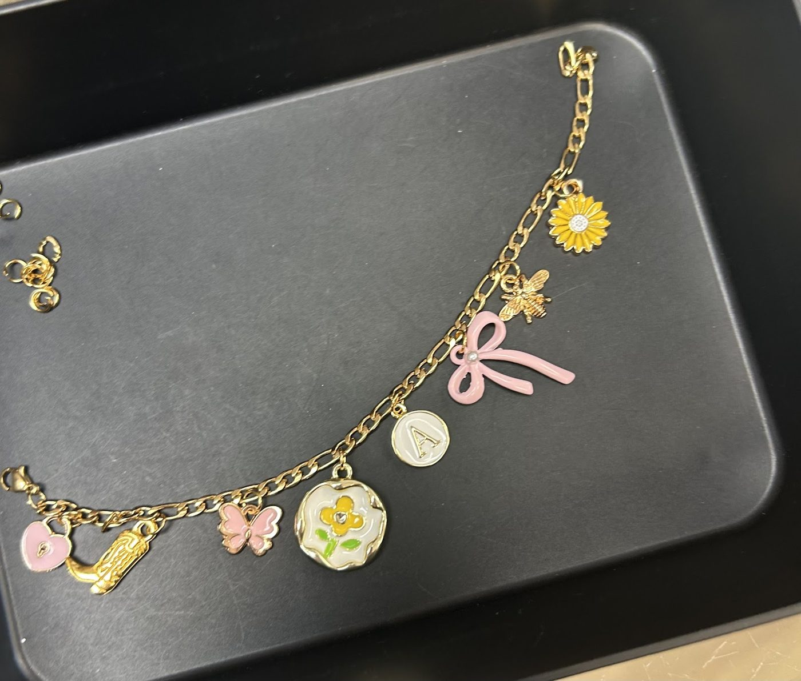

Beads & charms · Queen Street West, Toronto
Walls of beads, trays of charms, and a bracelet that’s all yours.
A Queen West bead shop packed floor to ceiling with beads, charms, chains and findings. Come in to stock up for your next project, or build a charm bracelet with a friend.
- Charm bracelets
- Beads & strands
- Chains & findings
- Friendly owners
What you’ll find
Charms & chains
Trays of charms, plus stainless steel, silver and gold-tone chains and clasps for bracelets, necklaces and bag charms.
Beads & strands
Glass, stone and seed beads by the packet or the strand, in every colour, plus cord, wire and findings for designers and hobbyists.
Help putting it together
Staff can help you choose pieces and assemble your bracelet. Recent reviewers mention a $5 assembly fee per piece; earlier reviewers say it was done for free.
This list comes from the shop’s Google listing (category: bead store), its photos, its reviews and the Queen Street West BIA directory. Prices are only quoted from reviews; the shop doesn’t publish a price list online.
Make a charm bracelet
Pick it, then make it
- Pick your chain: stainless steel, silver or gold tone.
- Choose your charms from the trays. Take your time; reviewers happily spend two hours.
- Make it yourself, or ask the staff to put it together for you.
“I went with my sister and we easily spent 2 hours here just looking through all the charm selections.”
Google review copied by exa.ai, Nov 10, 2025 (reviewer name not shown). Steps as described by Google reviewers.
What customers say
4.7 ★ from 282 Google reviews (checked Nov 9, 2026). Quotes are word for word. Each one says where it was read: on the Google listing itself, or on a public page that copies reviews. Google shows only a handful of reviews without signing in, so some quotes come from a directory copy that doesn’t show reviewer names.
★★★★★
I came here to create a charm bracelet to remind me of my exchange experience here in Canada! There was such an amazing selection, an amazing amount of charms to choose from and really nice chain selection too! I was able to find everything I need and Lin was super helpful when choosing the chain and the right pieces for my bracelet, and kindly put it together for me! A really nice experience, definitely recommend :)
★★★★★
This little shop is beyond what I could have imagined. My best friend and I decided to get a meaningful piece to symbolize our near 25 years of friendship - not only was there an overwhelming selection, but the staff was absolutely amazing! I can't imagine having a better experience!! So grateful 💖
★★★★★
One of my favourite stores in the city and the best place to find beads. A large selection at a very reasonable price.
Don, one of the owners of the store is extremely friendly and takes the time to get to know those of us who walk through the door. The other staff are also very friendly.
I just love going there but the only problem is I end up, leaving with way more than I had anticipated buying… Simply because it’s the best.
★★★★★
The owners here are very sweet and the atmosphere happy and welcoming. I had a pair of recycled, artisan earrings that I decided to freshen up after years of wear. I came to this shop a few times looking for parts and materials. It was bustling with creative energy every time. I ended up bringing my earrings to find the right fit for the parts I needed and was allowed to take my time, try things out, and use their pliers. Great local business to whom I wish continued success.
★★★★★
My partner brought my here for my birthday, had the absolute best time and enjoyed the variety they had. SOOO much to choose from!! Will be coming back 100% 🤩
((Also great customer service!))
★★★★★
This is such a fun activity to do in Toronto! I went with my sister and we easily spent 2 hours here just looking through all the charm selections. Everyone who was in the store with us was in pairs, either with their sister, bestie, or mom, it was so wholesome to see. The employees were so kind and assembled our bracelet and bag charm for an additional $5 each. It is so worth to get it assembled because they put so attention to detail in applying in charm, making sure all the colours of the hardware matched, and even placed each charm perfectly spaced apart. We only had to wait 10 mins for…
★★★★★
Such a fun budget-friendly group activity. Keep in mind there’s a 5 dollar fee if they assemble the bracelet for you. You also have to buy the clasps and the chains aside from the charms. Total will most likely come out to $20 with 6-8 chains. Super fun and the bracelets turn out so cute
★★★★★
this place is so fun!! You choose your chain and charms and they make you a necklace or bracelet- or anything for such good prices. They have stainless steel, silver and gold toned everything! I was able to make 3 necklaces for like $30 I come from Montreal so I don’t know when I’d be able to come back to make more jewelry but if you live nearby- definitely go 😆
★★★★★
The employees here were so sweet! The charms were super affordable and cute and every charm was super good condition. They offered to make us the bracelets for free! I recommend this place to anyone trying to make cute bracelets and jewelry. I’m definitely coming back!
★★★★★
Me and my friend came here to make friendship bracelets and we had a spectacular experience! Look at our adorable friendship bracelets. Even better, she made our day when she offered to make our bracelets for free. We will definitely be coming back. Super happy with our experience!!!
★★★★★
Such nice owners that helped me through the entire process. They made the bracelet and made sure it fit perfectly! It was also super affordable and many options to choose from. Such a fun experience totally recommend!!
★★★★★
Went here to make some DIY jewelry. I absolutely loved how many charms options they have- its the best in the neighborhood. Super cute. The owners are very welcoming and helpful. I got a necklace for myself super happy
Inside the shop
Real photos from Hi Beads’s public Google listing and its customers’ reviews. Tap to enlarge.
Visit the shop
543 Queen St W
Toronto, ON M5V 2B6
| Monday | 10:30 a.m.–6:30 p.m. |
|---|---|
| Tuesday | 10:30 a.m.–6:30 p.m. |
| Wednesday | 10:30 a.m.–6:30 p.m. |
| Thursday | 10:30 a.m.–6:30 p.m. |
| Friday | 10:30 a.m.–6:30 p.m. |
| Saturday | 10:30 a.m.–6:30 p.m. |
| Sunday | 11:30 a.m.–6 p.m. |
These are the hours on Google today, and they match the Queen Street West BIA directory. Weekends can be busy with bracelet-makers, so give yourself time.